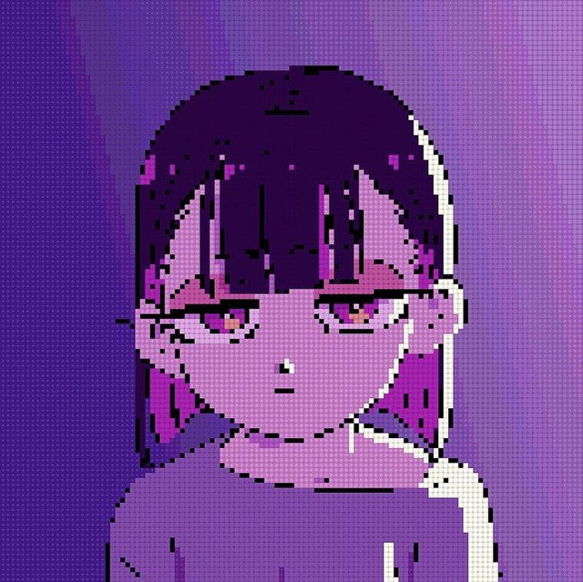

Lista de Álbumes


Zutto Mayonaka de ii Noni
Sobre Zutomayo
Aparte de ACA-Ne, la vocalista, no está claro cuántas personas componen la banda. ACA-Ne nunca ha revelado su rostro y la banda ha actuado detrás de una pantalla translúcida durante los conciertos, incluido el Festival Fuji Rock de 2019. Muchos han señalado que el secretismo de Zutomayo respecto a sus miembros ha contribuido a su popularidad. Sin embargo, en presentaciones más recientes, otros miembros de la banda han sido menos reservados, eligiendo mostrar sus rostros.
Zutomayo produce típicamente música rock, a menudo con líneas de bajo intrincadas e inspiradas en el funk. La voz de ACA-Ne ha sido descrita como "enérgica", "expresiva" y "delicada".